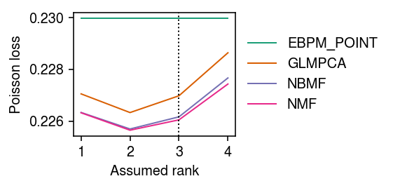
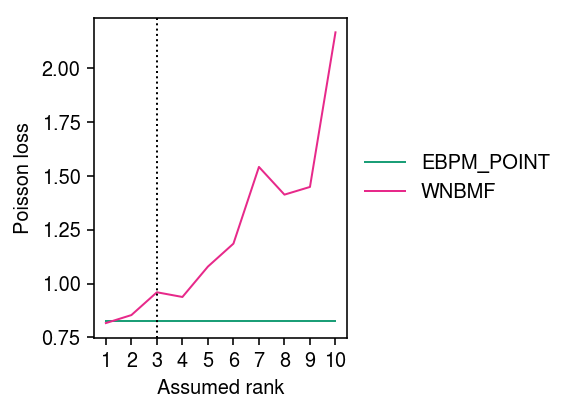
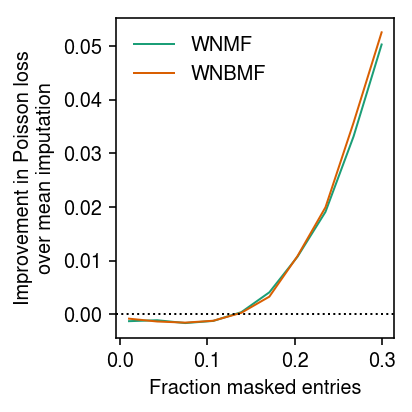

Weighted negative binomial matrix factorization
Table of Contents
Introduction
Negative Binomial Matrix Factorization (NBMF; Gouvert et al 2018) is the (augmented) model \( \newcommand\const{\mathrm{const}} \newcommand\E[1]{\left\langle #1 \right\rangle} \newcommand\vx{\mathbf{x}} \newcommand\vw{\mathbf{w}} \newcommand\vz{\mathbf{z}} \newcommand\mx{\mathbf{X}} \newcommand\mU{\mathbf{U}} \newcommand\mw{\mathbf{W}} \newcommand\mz{\mathbf{Z}} \newcommand\ml{\mathbf{L}} \newcommand\mf{\mathbf{F}} \)
\begin{align*} x_{ij} &= \sum_{k=1}^K z_{ijk}\\ z_{ijk} &\sim \operatorname{Poisson}(l_{ik} f_{jk} u_{ij})\\ u_{ij} &\sim \operatorname{Gamma}(1/\phi_{ij}, 1/\phi_{ij}) \end{align*}where the Gamma distribution is parameterized by a shape and a rate. (The mean of the Gamma distribution is 1, and its variance is \(\phi_{ij}\).) Gouvert et al. 2018 only consider the case \(\phi_{ij} = \phi\); however, other natural choices are \(\phi_{ij} = \phi_j\) and \(\phi_{ij} = \phi_i \phi_j\). The model admits analytic EM updates for \(\ml\) and \(\mf\), and numerical updates for the simple case \(\phi_{ij} = \phi\).
Here, we study the imputation performance of WNBMF on simulated problems.
Setup
import itertools as it import numpy as np import pandas as pd import scipy.stats as st import scmodes
%matplotlib inline %config InlineBackend.figure_formats = set(['retina'])
import matplotlib.pyplot as plt plt.rcParams['figure.facecolor'] = 'w' plt.rcParams['font.family'] = 'Nimbus Sans'
Methods
Simulation
Draw data from the model, assuming \(\phi_{ij} = \phi\). We define "proportion of variance explained" as \(\operatorname{Var}(\mu_{ij}) / (\operatorname{Var}(\mu_{ij}) + \operatorname{Var}(u_{ij}))\).
def simulate(n, p, k, pve=0.5, seed=0): np.random.seed(seed) l = np.random.lognormal(sigma=.5, size=(n, k)) f = np.random.lognormal(sigma=.5, size=(p, k)) mu = l.dot(f.T) if pve < 1: inv_disp = 1 / ((1 / pve - 1) * mu.var()) u = np.random.gamma(shape=inv_disp, scale=1 / inv_disp, size=(n, p)) else: u = 1 x = np.random.poisson(lam=mu * u) return x, mu, u
Results
Simulated NB example
Simulate some data from the model.
np.random.seed(0) n = 500 p = 100 k = 3 l = np.random.lognormal(sigma=.5, size=(n, k)) f = np.random.lognormal(sigma=.5, size=(p, k)) mu = l.dot(f.T) inv_disp = 0.1 u = np.random.gamma(shape=inv_disp, scale=1 / inv_disp, size=(n, p)) x = np.random.poisson(lam=mu * u)
Run the methods. For WNBMF, initialize at the oracle value.
imputation_res = [] for rank in range(1, 11): for method in ('oracle', 'ebpm_point', 'wnmf', 'wglmpca', 'wnbmf'): try: loss = getattr(scmodes.benchmark, f'imputation_score_{method}')(x, rank=rank, frac=0.1, seed=0, inv_disp=inv_disp, fix_inv_disp=False) except RuntimeError: # WGLMPCA fails often loss = np.nan imputation_res.append([method, rank, loss]) imputation_res = pd.DataFrame(imputation_res, columns=['method', 'rank', 'loss'])
Plot the results.
cm = plt.get_cmap('Dark2') plt.clf() plt.gcf().set_size_inches(4, 3) for i, (k, g) in enumerate(imputation_res.groupby('method')): plt.plot(g['rank'], g['loss'], lw=1, marker=None, c=cm(i), label=k.upper()) plt.axvline(x=3, lw=1, ls=':', c='k') plt.legend(frameon=False, loc='center left', bbox_to_anchor=(1, .5)) plt.xticks(np.arange(1, 11), np.arange(1, 11)) plt.xlabel('Assumed rank') plt.ylabel('Poisson loss') plt.tight_layout()

Zoom in on WNBMF and EBPM-Point.
cm = plt.get_cmap('Dark2') plt.clf() plt.gcf().set_size_inches(4, 3) for i, (k, g) in enumerate(imputation_res.groupby('method')): if k in ('ebpm_point', 'wnbmf'): plt.plot(g['rank'], g['loss'], lw=1, marker=None, c=cm(i), label=k.upper()) plt.axvline(x=3, lw=1, ls=':', c='k') plt.legend(frameon=False, loc='center left', bbox_to_anchor=(1, .5)) plt.xticks(np.arange(1, 11), np.arange(1, 11)) plt.xlabel('Assumed rank') plt.ylabel('Poisson loss') plt.tight_layout()

Look at how imputation performance depends on the relative magnitude of the random effect variance \(\phi\) and the structured variance \(\operatorname{Var}(\mu)\). Give each method the oracle rank.
imputation_res = [] for pve in np.linspace(.1, .9, 9): for method in ('ebpm_point', 'wnmf', 'wnbmf'): x, *_ = simulate(n=500, p=100, k=3, pve=pve, seed=0) loss = getattr(scmodes.benchmark, f'imputation_score_{method}')(x, rank=3, frac=0.1, seed=0, inv_disp=1, fix_inv_disp=False) imputation_res.append([pve, method, loss]) imputation_res = pd.DataFrame(imputation_res, columns=['pve', 'method', 'loss'])
cm = plt.get_cmap('Dark2') plt.clf() plt.gcf().set_size_inches(3, 3) for i, (k, g) in enumerate(imputation_res.groupby('method')): plt.plot(g['pve'], g['loss'], lw=1, c=cm(i), label=k.upper()) plt.legend(frameon=False) plt.xlabel('Proportion of variance explained') plt.ylabel('Poisson loss') plt.tight_layout()
Look at how imputation performance depends on the proportion of masked entries.
imputation_res = [] for frac in np.linspace(.01, .3, 10): for method in ('ebpm_point', 'wnmf', 'wnbmf'): x, *_ = simulate(n=500, p=100, k=3, pve=0.9, seed=0) loss = getattr(scmodes.benchmark, f'imputation_score_{method}')(x, rank=3, frac=frac, seed=0, inv_disp=1, fix_inv_disp=False) imputation_res.append([frac, method, loss]) imputation_res = pd.DataFrame(imputation_res, columns=['frac', 'method', 'loss'])
cm = plt.get_cmap('Dark2') T = imputation_res.pivot(index='frac', columns='method')['loss'] plt.clf() plt.gcf().set_size_inches(3, 3) for i, m in enumerate(('wnmf', 'wnbmf')): plt.plot(T.index, T['ebpm_point'] - T[m], lw=1, c=cm(i), label=m.upper()) plt.axhline(y=0, lw=1, ls=':', c='k') plt.legend(frameon=False) plt.xlabel('Fraction masked entries') plt.ylabel('Improvement in Poisson loss\nover mean imputation') plt.tight_layout()

Rank 1 problem
To understand why WNMF/WNBMF do worse than mean imputation when the fraction of masked entries is small, look at a rank 1 problem. First, repeat the analysis varying the fraction of masked entries, fixing the rank of each method to the oracle value.
imputation_res = [] for pve in (0.5, 0.9, 1): x, *_ = simulate(n=500, p=100, k=1, pve=pve, seed=0) for frac in np.linspace(.01, .3, 10): for method in ('ebpm_point', 'wnmf', 'wnbmf'): loss = getattr(scmodes.benchmark, f'imputation_score_{method}')(x, rank=1, frac=frac, seed=0, inv_disp=1, fix_inv_disp=False) imputation_res.append([pve, frac, method, loss]) imputation_res = pd.DataFrame(imputation_res, columns=['pve', 'frac', 'method', 'loss'])
cm = plt.get_cmap('Paired') T = imputation_res.pivot_table(index='frac', columns=['method', 'pve'], values='loss') plt.clf() plt.gcf().set_size_inches(3.5, 3) for i, (p, m) in enumerate(it.product((0.5, 0.9, 1), ('wnmf', 'wnbmf'))): plt.plot(T.index, T['ebpm_point', p] - T[m, p], lw=1, c=cm(i), label=f'{m.upper()}–{p:.1f}') plt.axhline(y=0, lw=1, ls=':', c='k') plt.legend(frameon=False) plt.xlabel('Fraction masked entries') plt.ylabel('Improvement in Poisson loss\nover mean imputation') plt.tight_layout()
Zoom in around 0 improvement.
cm = plt.get_cmap('Paired') T = imputation_res.pivot_table(index='frac', columns=['method', 'pve'], values='loss') plt.clf() plt.gcf().set_size_inches(3.5, 3) plt.ylim(-2e-4, 2e-4) for i, (p, m) in enumerate(it.product((0.5, 0.9, 1), ('wnmf', 'wnbmf'))): plt.plot(T.index, T['ebpm_point', p] - T[m, p], lw=1, c=cm(i), label=f'{m.upper()}–{p:.1f}') plt.axhline(y=0, lw=1, ls=':', c='k') plt.legend(frameon=False) plt.xlabel('Fraction masked entries') plt.ylabel('Improvement in Poisson loss\nover mean imputation') plt.tight_layout()
Look at one example where PVE = 0.5.
x, mu, u = simulate(n=500, p=100, k=1, pve=0.5, seed=0) w = np.random.uniform(size=x.shape) < 0.99 m0 = scmodes.lra.nbmf(x, w=w, rank=1, inv_disp=1, fix_inv_disp=False) # Fix inverse dispersion to oracle value m1 = scmodes.lra.nbmf(x, w=w, rank=1, inv_disp=u.var(), fix_inv_disp=True) # Initialize inverse dispersion to oracle value m2 = scmodes.lra.nbmf(x, w=w, rank=1, inv_disp=u.var(), fix_inv_disp=False)
Look at the difference in log likelihood between default initialization of inverse dispersion and oracle inverse dispersion.
m0[-1] - m1[-1]
-826.6176850515767
Look at the difference in log likelihood between default initialization and initializing at oracle inverse dispersion.
m0[-1] - m2[-1]
-0.02368231453874614
Look at the difference in imputation performance.
np.array([np.where(w, -st.poisson(mu=m[0] @ m[1].T).logpmf(x), 0).sum() for m in (m0, m1, m2)])
array([72207.27616216, 72227.28379018, 72207.59613526])
Look at mean imputation.
s = (w * x).sum(axis=1) muhat = (w * x).sum(axis=0) / s.sum() -np.where(w, st.poisson(mu=np.outer(s, muhat)).logpmf(x), 0).sum()
72185.58560610042
Look at the median absolute difference in the estimated \(\mu_{ij}\) at observed entries.
# Important: in numpy.ma, True = missing np.ma.median(np.ma.masked_array(abs(x - m0[0] @ m0[1].T), mask=~w))
0.7076492332569424
np.ma.median(np.ma.masked_array(abs(x - np.outer(s, muhat)), mask=~w))
0.7092451591147081
Look at the scatter of predicted \(\mu_{ij}\).
plt.clf() fig, ax = plt.subplots(2, 2, sharex=True, sharey=True) fig.set_size_inches(5, 5) ax[0,0].scatter((m0[0] @ m0[1].T)[w].ravel(), mu[w].ravel(), c='0.7', label='Observed', s=1, alpha=0.1) ax[0,0].scatter((m0[0] @ m0[1].T)[~w].ravel(), mu[~w].ravel(), c='r', label='Masked', s=1, alpha=0.5) ax[0,0].set_ylabel('Ground truth $\mu$') leg = ax[0,0].legend(frameon=False, handletextpad=0, markerscale=4) for t in leg.legendHandles: t.set_alpha(1) ax[0,1].axis('off') ax[1,0].scatter((m0[0] @ m0[1].T)[w].ravel(), np.outer(s, muhat)[w].ravel(), c='0.7', label='Observed', s=1, alpha=0.1) ax[1,0].scatter((m0[0] @ m0[1].T)[~w].ravel(), np.outer(s, muhat)[~w].ravel(), c='r', label='Masked', s=1, alpha=0.5) ax[1,0].set_xlabel('WNBMF $\hat\mu$') ax[1,0].set_ylabel('EBPM-Point $\hat\mu$') ax[1,1].scatter(mu[w].ravel(), np.outer(s, muhat)[w].ravel(), c='0.7', label='Observed', s=1, alpha=0.1) ax[1,1].scatter(mu[~w].ravel(), np.outer(s, muhat)[~w].ravel(), c='r', label='Masked', s=1, alpha=0.5) ax[1,1].set_xlabel('Ground truth $\mu$') fig.tight_layout()